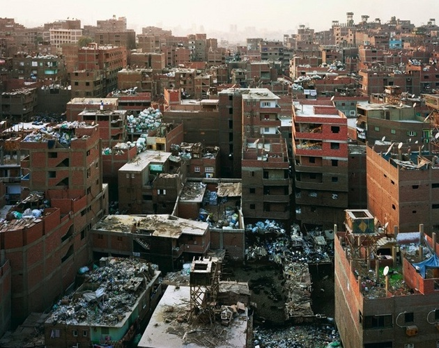

1 / 3

Mokattam village, Garbage city
2 / 3
Kids of the village
3 / 3

Men picking up garbage
Our Struggles
Effectively disposing of trash is a constant concern of today's world. While many countries have achieved this goal, other countries and cities are heavily polluted by trash.
In the United States alone, "approximately 262 million tons of MSW [Municipal Solid Waste] were generated" -US EPA.
Others suffer far worse. These are the struggles of people living in trash towns, and our next steps for eliminating waste.
On the outskirts of Cairo, Egypt, the Zabbaleen (garbage people) are a population of seven settlements. The most prominent settlement is in Mokattam village, which has a nickname of "garbage city" The Zabaleen have a duty of recycling trash of all sorts (glass, plastic, metal, paper, food, etc.) that are brought from the cities. This work is very laborous and difficult because there has to be a certain amount of recycled material each day. Men, women and children are involved in this recycling process. In fact, some children, as young as 9 or 10 do this work.
The Zabbaleen people live in very poor environmental conditions due to polluted air and trash everywhere they go.
This makes the Zabbaleen very prone to disease and consequently, high mortality rates for children and infants. As one would imagine, handling the trash is risky and dangerous because one could encounter sharp objects and needles. Furthermore, the community is absent of basic services such as health care and good education, which parents very much desire for their children. Another large problem is low income because the residents receive barely enough money to sustain themselves and their family. We need to find a better way to eliminate the trash of Cairo, in order to improve the lives of the Zabbaleen Anyone living in the garbage city wishes to leave to have a better lifestyle. But they have no other job to turn to. One man from the trash town states that everyone desires to go abroad, to take on any other job. Another lady said, "take us to another country and we'll leave this place".
But however difficult their work may be, the zabbaleen take pride in what they do, as they view it as "socially important".